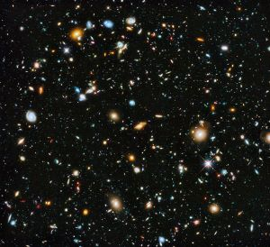

Universe
Structure in the Universe
The universe contains organized structures on all different scales, from small systems like the earth and our solar system, to galaxies that contain trillions of stars, and finally extremely large structures that contain billions of galaxies. How and why these organized structures formed and how they influence one another is a major focus of modern astrophysics.
The COSMOS survey is designed to measure properties of individual galaxies and the largest structure in the universe at the same time. This allows astronomers to understand how the largest systems influence the smallest one and how this interplay changes with time. COSMOS
How does the universe work?
Observations with the Hubble Space Telescope and other observatories showed that the universe is expanding at an ever-increasing rate, implying that some day - in the very distant future - anyone looking at the night sky would see only our Galaxy and its stars. The billions of other galaxies will have receded beyond detection by these future observers. The origin of the force that is pushing the universe apart is a mystery, and astronomers refer to it simply as "dark energy". This new, unknown component, which comprises ~68% of the matter-energy content of the universe, will determine the ultimate fate of all. Determining the nature of dark energy, its possible history over cosmic time, is perhaps the most important quest of astronomy for the next decade and lies at the intersection of cosmology, astrophysics, and fundamental physics.
Knowing how the laws of physics behave at the extremes of space and time, near a black hole or a neutron star, is also an important piece of the puzzle we must obtain if we are to understand how the universe works. Current observatories operating at X-ray and gamma-ray energies, such as the Chandra X-ray Observatory, NuSTAR, Fermi Gamma-ray Space Telescope, and ESA's XMM-Newton, are producing a wealth of information on the conditions of matter near compact sources, in extreme gravity fields unattainable on Earth. NASA
What is universe?

The Universe is all of space and time and their contents,including planets, stars, galaxies, and all other forms of matter and energy. While the spatial size of the entire Universe is unknown, it is possible to measure the size of the observable universe, which is currently estimated to be 93 billion light-years in diameter. In various multiverse hypotheses, a universe is one of many causally disconnected constituent parts of a larger multiverse, which itself comprises all of space and time and its contents; as a consequence, ‘the Universe’ and ‘the multiverse’ are synonymous in such theories.
Wikipedia
Size and Shape
The size of the Universe is somewhat difficult to define. According to the general theory of relativity, far regions of space may never interact with ours even in the lifetime of the Universe due to the finite speed of light and the ongoing expansion of space. For example, radio messages sent from Earth may never reach some regions of space, even if the Universe were to exist forever: space may expand faster than light can traverse it.
General relativity describes how spacetime is curved and bent by mass and energy (gravity). The topology or geometry of the Universe includes both local geometry in the observable universe and global geometry. Cosmologists often work with a given space-like slice of spacetime called the comoving coordinates. The section of spacetime which can be observed is the backward light cone, which delimits the cosmological horizon. The cosmological horizon (also called the particle horizon or the light horizon) is the maximum distance from which particles can have traveled to the observer in the age of the Universe. This horizon represents the boundary between the observable and the unobservable regions of the Universe. The existence, properties, and significance of a cosmological horizon depend on the particular cosmological model.
Observations, including the Cosmic Background Explorer (COBE), Wilkinson Microwave Anisotropy Probe (WMAP), and Planck maps of the CMB, suggest that the Universe is infinite in extent with a finite age, as described by the Friedmann–Lemaître–Robertson–Walker (FLRW) models. These FLRW models thus support inflationary models and the standard model of cosmology, describing a flat, homogeneous universe presently dominated by dark matter and dark energy.
Wikipedia